因为第一次分析文件格式，中间遇到了很多的疑惑，自己能分析下来也是不错哦！小小的鼓励下自己
这里提供一些学习资料
这是一位大神写的，他的博客里还有很多干货用命令解析一下dex文件
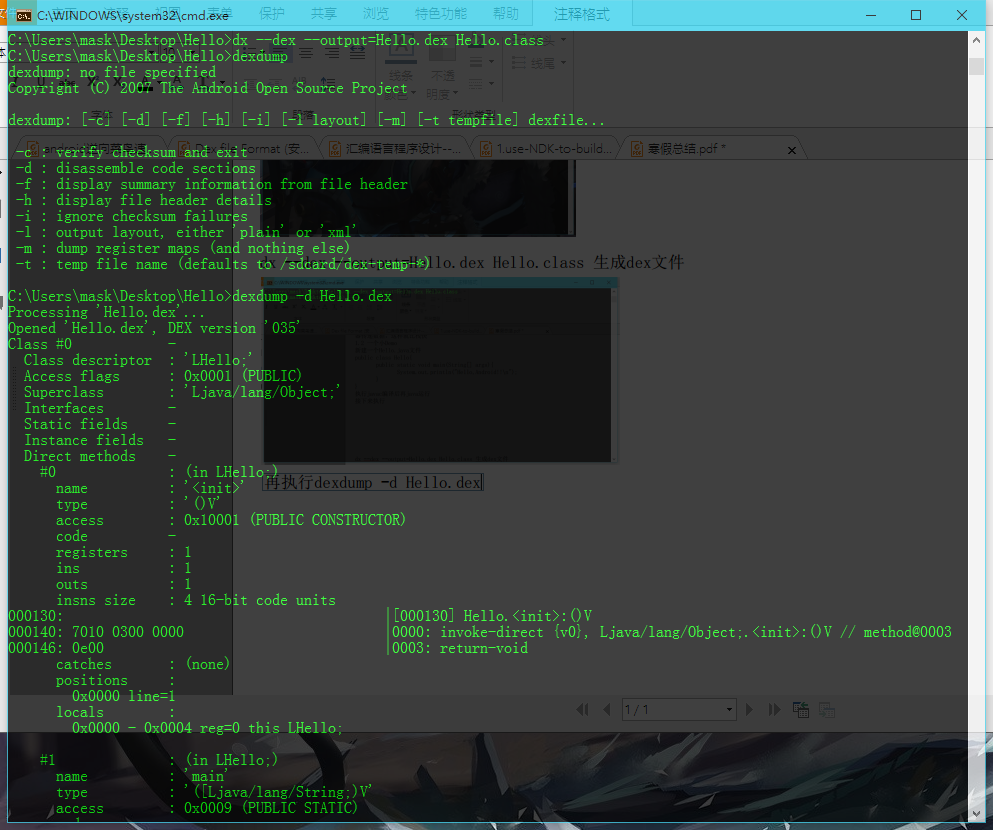将它输入到一个txt文件中
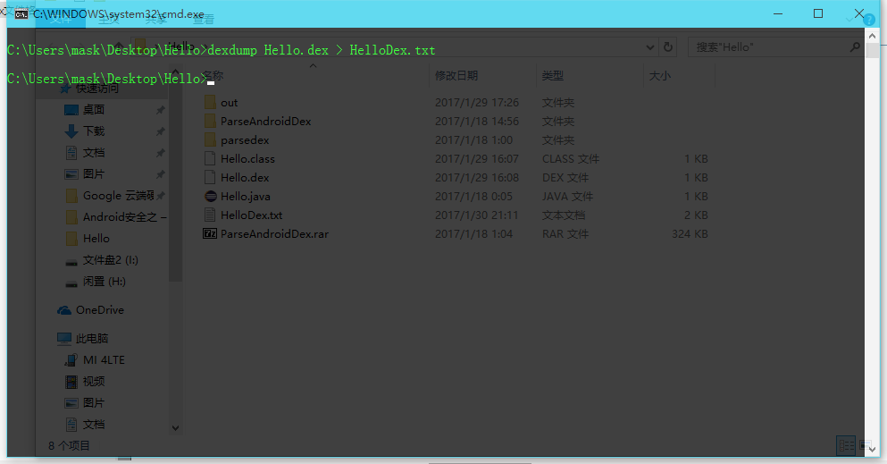用编辑器打开这个txt文件
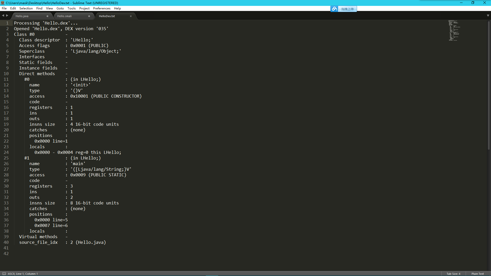呐，这个是dexdump自动帮我们解析的，文件里有些什么这里都表述的蛮清楚了，之前觉得只要把这个搞清楚，那么自己应该也就了解 dex文件了，后来发现这样并不能掌握dex文件的结构，因为。。。。。。
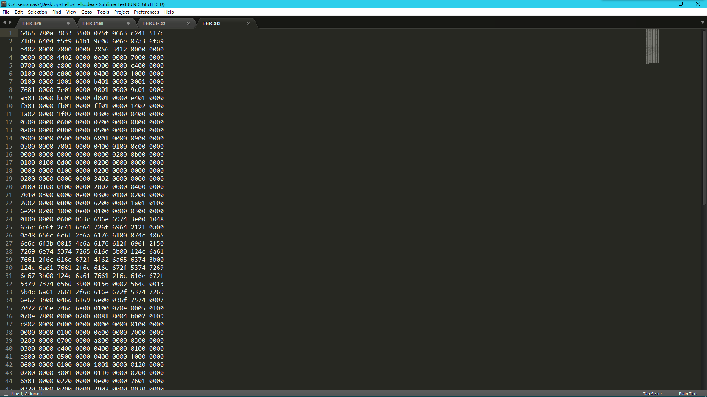我看到这个的时候是蒙蔽的，那么废话不多说，直接开始分析 首先，分析Dex文件格式，这张图是少不了的
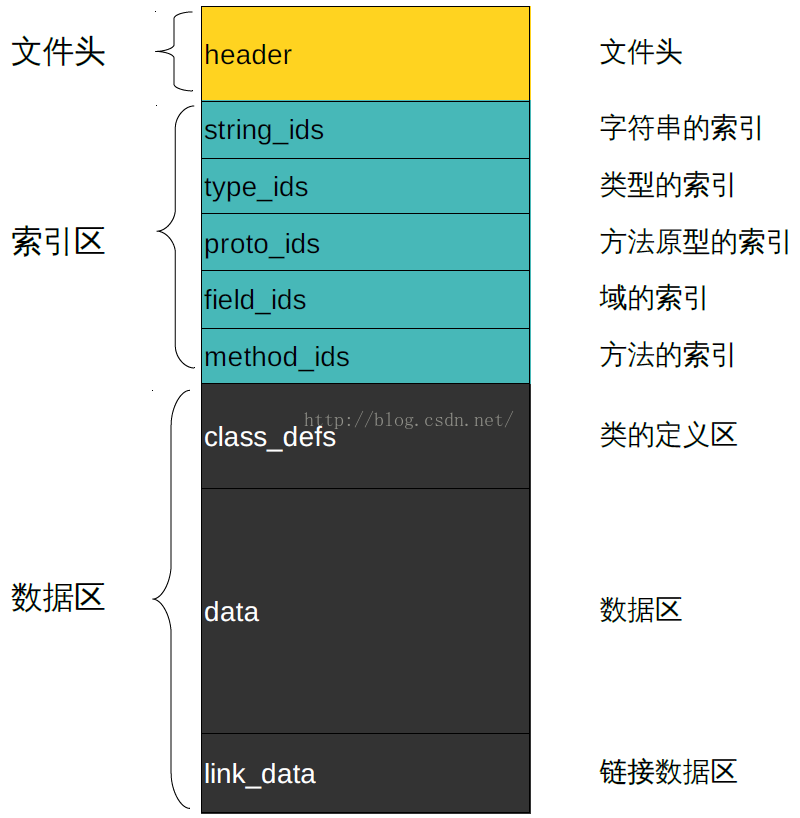首先来看看文件都有哪些部分：文件头，索引区，数据区 我的理解是，他们的关系为 文件头->索引区->数据区 那么首先来分析这个文件头
除了描述.dex 文件的文件信息外，还有文件里其它各个区域的索引，header 对应成 结构体类型 header区大小固定为 0x70,偏移地址从 0x00 到 0x70:
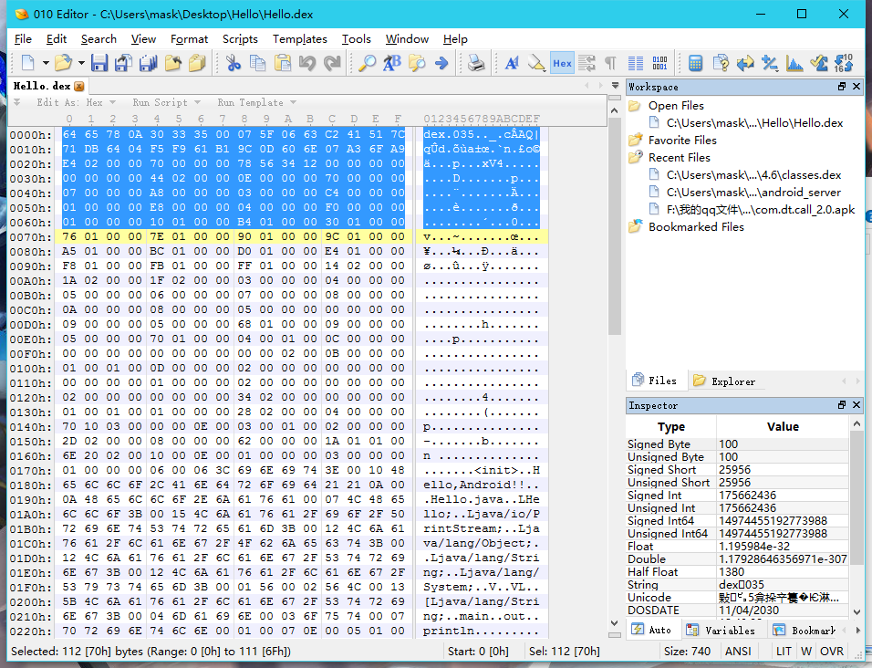先看前面八个字节："64 65 78 0A 30 33 35 00"对应为"dex035" 这里解释下，因为这里的数字都是以16进制显示，所以对应的10进制为"100 101 120 10 48 51 53 00 " 那么参照ascii表可以发现,对应为"dex\n035\0","\n"为换行符,"\0"为结束符，那么下面的16进制就不一一解释了 "035"表示版本号，现在有"035","036"两种，如果为"036"则表示该dex文件被优化过
这两个部分是用来验证dex是否被修改过，这个就不具体说了，就是利用了一些算法什么的 checksum占4字节 signature占20个字节
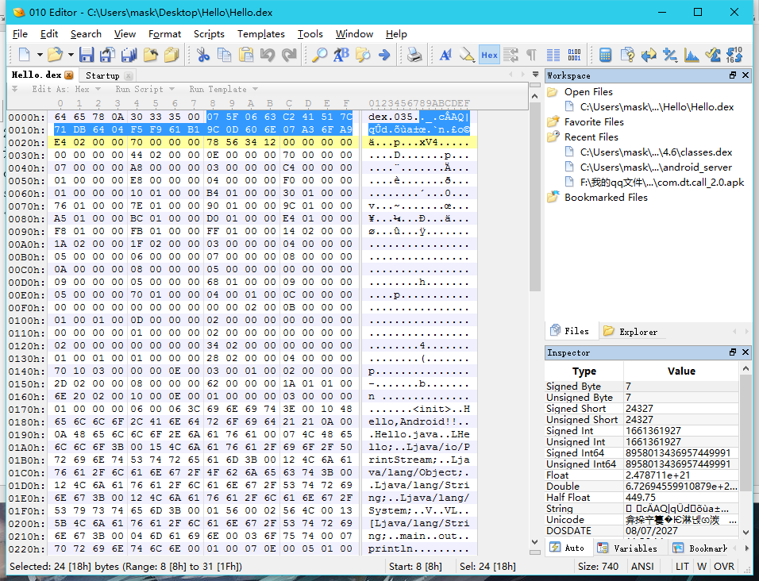这里指dex文件的大小，这里占4个字节
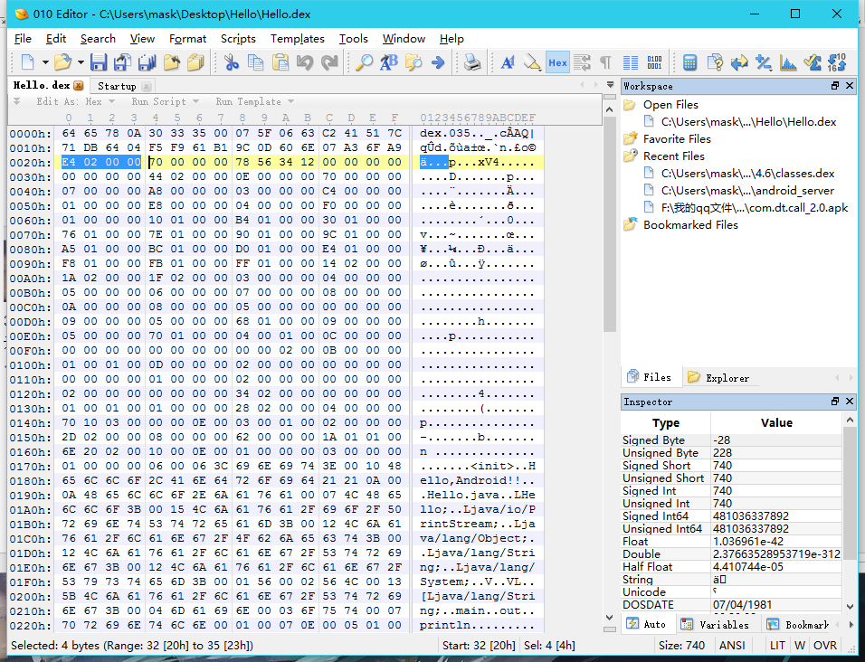大小为0x02E4(之前这里我在想为啥是倒过来读，后来学了汇编之后，我明白了是因为高位低位的缘故，呐，这个无关紧要 )
占了4个字节，指的是header区域的大小，一般固定为0x70
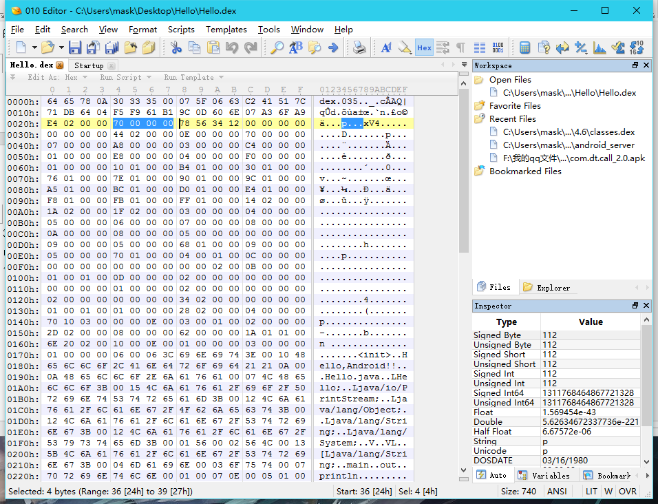占了4个字节，这个通常是个常数0x12345678
占了4个字节，指的是LinkSection 的大小, 如果为0 表示该DEX 文件不是静态连结。呐，这里是0
占了4个字节，指的是LinkSection 距离Dex 头的Offset. 如果LinkSize 为0, 此值也会为0.
占了4个字节，指的是map item 的偏移地址 ，该 item 属于 data 区里的内容 ，值要大于等于 data_off 的大小
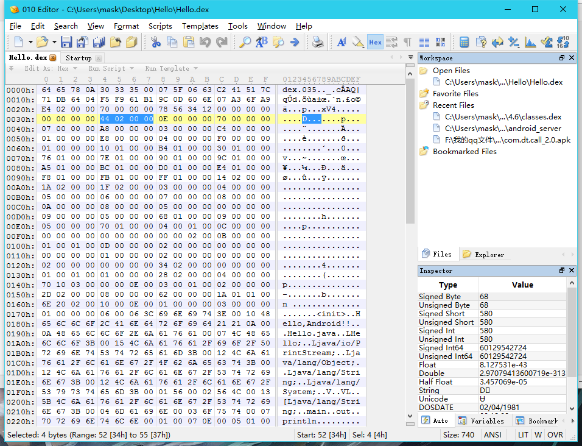
定义位置 ： data 区
引用位置 ：header 区
struct maplist
{
uint size;
map_item list [size];
}
struct map_item
{
ushort type;
ushort unuse;
uint size;
uint offset;
}
map_list 里先用一个 uint 描述后面有 size 个 map_item , 后续就是对应的 size 个 map_item 描述 。
map_item 结构有 4 个元素 ： type 表示该 map_item 的类型 ，size 表示再细分此 item ， 该类型的个数 ；offset 是第一个元素
的针对文件初始位置的偏移量 ； unuse 是用对齐字节的 ，无实际用处
header->map_of 偏移为 0244 的位置值为 0x 000d 。
每个 map_item 描述占用 12 Byte ， 整个 map_list 占用 12 * size + 4 个字节 。所以整个 map_list 占用空
间为 12 * 13 + 4 = 160 = 0x00a0 ， 占用空间为 0x 0244 ~ 0x 02E3
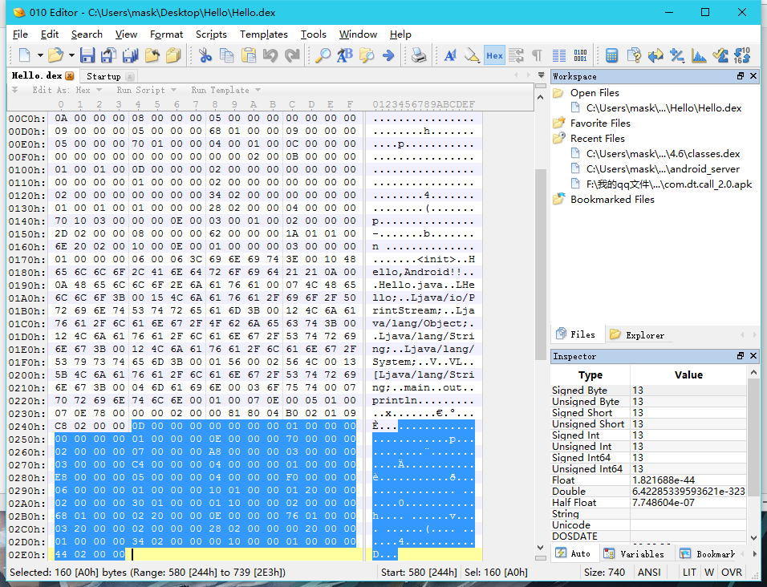
地址 0x0244 的一个 uinit 的值为 0x0000 000d ，map_list - > size = 0x0d = 13 ，说明后续有 13 个 map_item 。根据 map_item 的结构描述在 0x0248 ~ 0x02e3 里的值 ， 呐，这里是这13 个 map_item 内容
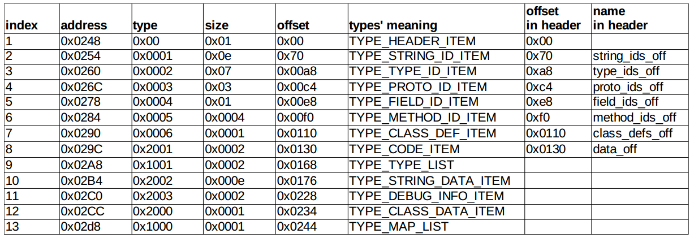这里理解下，就是header区有对应的 string_ids_off,type_ids_off,proto_ids_off,field_ids_off,method_ids_off,class_defs_off ,data_off各自表示一些偏移，每一项各占4个字节，起到了索引的作用，其中每个off偏移前面都有一个对应的size占四个字节，描述大小，对应的是header区下面的索引区里的容
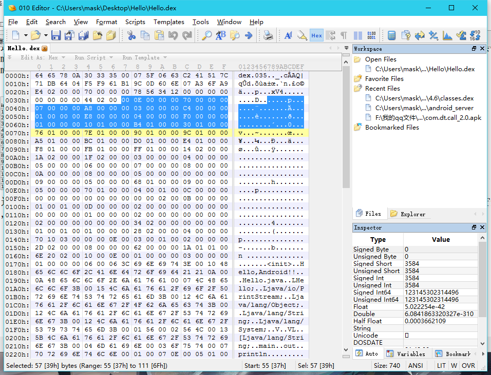索引区与header区的偏移一一对应：
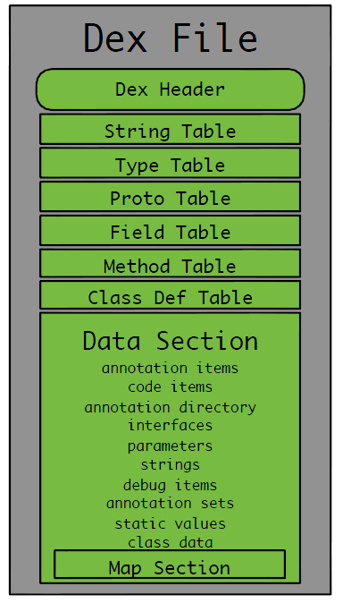那么header区算是结束了，接下来就是索引区！